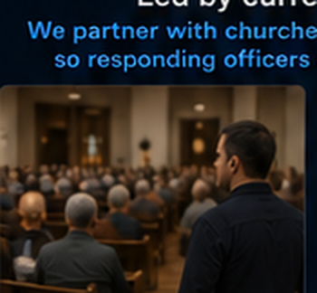
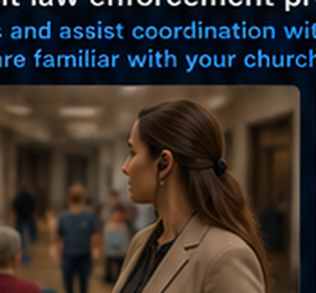
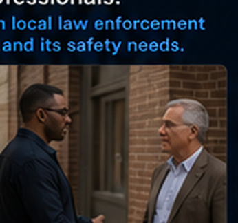
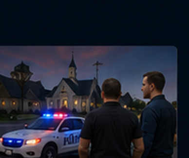

Welcoming & Observing
Friendly presence, awareness, and conversation are often the first line of defense.
About Iron Star Apps
Iron Star Apps exists to help churches prepare, protect, and respond with confidence. We bring practical experience and a mission-focused approach to strengthening the safety of people, ministry, and community.
Our Why
Churches are places of hope, worship, service, and community. They are also places where families gather, children meet, and volunteers serve. We believe churches deserve practical help that respects their mission while improving awareness, planning, and response readiness.
Our team background includes current law enforcement, experience as former firefighter / EMTs, and work as special government contractors. That background shapes our focus on calm leadership, practical planning, and real-world readiness.
What it can look like
A strong safety posture does not have to look out of place. It can look natural, professional, calm, and people-focused.
Friendly presence, awareness, and conversation are often the first line of defense.

Teams can remain subtle, attentive, and respectful of the worship environment.

Quiet awareness around entrances, hallways, and children’s areas helps spot concerns early.

We work with church leadership to build plans that fit your church and your people.

We help improve agency familiarity, communication, and response coordination.